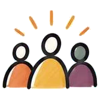
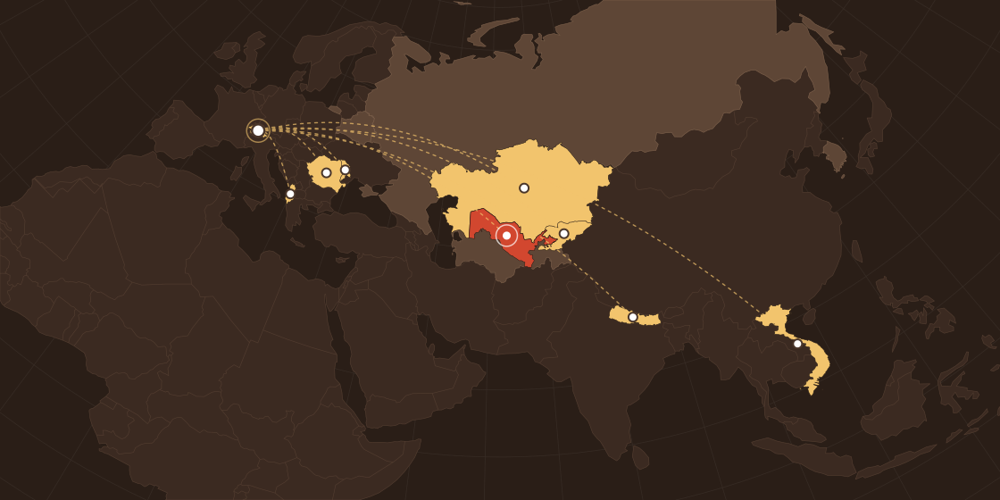

Карта действий
Как создать устойчивый семейный бизнес в Узбекистане в 2026 году
С чего начать и какие шаги сделать — от идеи до плана на 90 дней. 7 остановок: на каждой вопрос, действие и результат. Для тех, кто только начинает, и для тех, у кого бизнес уже работает.
- 1Нажмите кнопку
- 2Нажмите «Старт» в боте
- 3Бот сразу пришлёт PDF
Работайте с картой по порядку. А онлайн-диагностика за 5 минут покажет, где на этой карте ваш бизнес находится сейчас.
Открыть бот с картой ещё разВаш бизнес устойчивый? Проверьте за минуту
Это бизнес, который приносит стабильный доход семье и не рушится, если вы заболели, уехали или что-то пошло не так. Карта ведёт к нему шаг за шагом. Ответьте себе честно на 4 вопроса:

Клиенты приходят каждый месяц, а не только в удачный сезон?Продажи не зависят от удачи, сезона или одного знакомого.7 шагов:от идеи до плана на 90 дней
Нажмите на остановку, чтобы увидеть, что вы на ней сделаете.
Идея
Мы долго искали проблему не там
- 1Сначала думали —дело в оборудовании
✕ - 2Потом —не хватает денег
✕ - 3Потом —нет клиентов
✕
Почему результат не меняется, сколько ни старайся
Результаты зависят от того, как устроен бизнес. А как он устроен — зависит от вас. Пока не меняется первое и второе, третье остаётся прежним.
Часто деньги есть — но они утекают. Сначала посчитайте: сколько приходит, сколько уходит и сколько остаётся лично вам.
Тогда станет видно, где дыра, — и что чинить первым.
Карта показывает весь путь. Но у каждого бизнеса своя главная проблема: у одного — деньги, у другого — люди или время. Начинать лучше с неё.
Теперь у вас есть карта.Узнайте, насколько устойчив ваш бизнес сейчас.
10 простых вопросов: как бизнес зарабатывает, откуда клиенты, что с деньгами, временем и командой. Вы увидите, что мешает бизнесу стать устойчивым, и поймёте, с чего начать. Результат можно бесплатно отправить куратору в Telegram.
Самый короткий луч — первое, что стоит разобрать. В этом примере это финансы — с них и начинать.
Программа родом из Швейцарии
Family Business Training — практическая программа для владельцев малого и семейного бизнеса. В её основе методология Swiss Create Business Academy: обучение, наставничество, простые инструменты и сообщество предпринимателей.
Методология развивается около 30 лет и применяется международной сетью партнёров. В Узбекистане FBT проводит Impact Consulting.

Философия FBT: бизнес, который работает на семью — и который смогут продолжить дети и внуки. Victorinox и Ferrero когда-то тоже были небольшими семейными предприятиями.
Уже рассматриваете обучение?
На странице программы — всё, чтобы решить: подходит вам FBT Online или нет.
Ещё не прошли диагностику? 10 вопросов, 5 минут — узнать, с чего начать